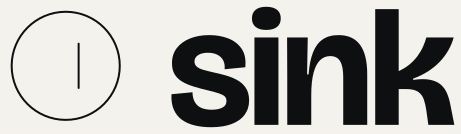

Type
Three faces
h1 · Bricolage 500Lock once.
72 / 0.95 / −0.03em
mobile 44Headlines sit on the baseline, left-aligned, never centred in a box.
mobile 44Headlines sit on the baseline, left-aligned, never centred in a box.
h2 · Bricolage 500
40 / 1.05 / −0.02emWhat the block earns
40 / 1.05 / −0.02emWhat the block earns
h3 · Bricolage 500
22 / 1.2 / −0.01emCan I get my FABLES back?
22 / 1.2 / −0.01emCan I get my FABLES back?
Wordmark · Bricolage 700
tracking −0.025em
tracking −0.025em
Lead · Instrument Sans 400
21 / 1.45, mobile 17
21 / 1.45, mobile 17
Sink does the locking and the voting.
Body · Instrument Sans 400
17 / 1.5
17 / 1.5
You deposit FABLES, or a veFABLES NFT you already hold.
Label · Azeret Mono 400
12 / 1.2 / +0.08em, capssFABLES in circulation
12 / 1.2 / +0.08em, capssFABLES in circulation
Figure · Azeret Mono 400
28, tabular06d 23h 59m 59s
28, tabular06d 23h 59m 59s
Figure · Azeret Mono 400
40, tabular12,500.00
40, tabular12,500.00
Colour
Four and one
Paper#F4F2EC
Ink#0E0F10
Ink 2#5C5F63
Rule#D9D5CB
Cobalt#1F3FD1
Cobalt appears in three places only: the live indicator, the one primary action, and the sFABLES line in charts. Everything else is ink on paper. No gradients, no glow, no shadows.
Space
Grid and waterline
- Columns
- 12
- Outer margin
- 96px desktop · 24px mobile
- Gutter
- 24px desktop · 16px mobile
- Baseline unit
- 8px
- Waterline
- 560px from top desktop · 420px mobile · 1px ink
- Other rules
- 1px #D9D5CB
- Corners
- 0px; 2px maximum
- Motion
- The epoch countdown digits. Nothing else moves.
Above the waterline is explanation. Below it is the instrument: numbers, tables, the app.
Logo
Mark, wordmark, lockup


The mark is a drain seen from above: a circle and one off-centre slot, a 2px ink stroke at every size. The favicon carries a heavier stroke so it holds at 16px.